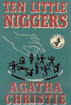
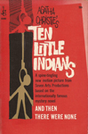
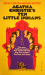
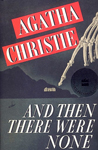
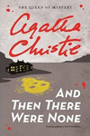
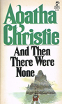
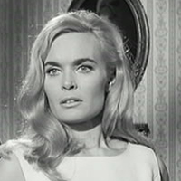
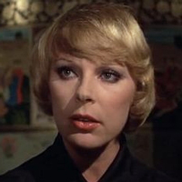

And Then There Were None was described by Agatha Christie as the most difficult of her books to write. First published in the United Kingdom by the Collins Crime Club in November 1939 as Ten Little Niggers, after the minstrel song, which serves as a major plot point. The US edition was released in January 1940 with the title And Then There Were None, which is taken from the last five words of the song. All successive American reprints and adaptations use that title, except for the Pocket Books paperbacks published between 1964 and 1986, which appeared under the title Ten Little Indians. The book is the world's best-selling mystery, and with over 100 million copies sold is one of the best-selling books of all time.






Screen Versions
And Then There Were None has had more adaptations than any other single work by Agatha Christie. Christie herself changed the bleak ending to a more palatable one for theatre audiences when she adapted the novel for the stage in 1943. Many adaptations incorporate changes to the story, such as using Christie's alternative ending from her stage play or changing the setting to locations other than an island.
There have been numerous film adaptations of the novel including four Indian versions and one from Russia. They are: And Then There Were None (1945 - René Clair), Ten Little Indians (1965 - George Pollock), Gumnaam (1965 - an Indian suspense thriller), Nadu Iravil (1970 - translation: In the middle of the night - a Tamil adaptation by Sundaram Balachander, And Then There Were None (1974 - the first English-language colour version - by Peter Collinson), Desyat' Negrityat (1987 - a Russian adaptation by Stanislav Govorukhin), Ten Little Indians (1989 - Alan Birkinshaw), Mindhunters (2004 - an American-British crime thriller), Aduthathu (2012 - a Tamil adaptation) and Aatagara (2015 - a Kannada adaptation).

